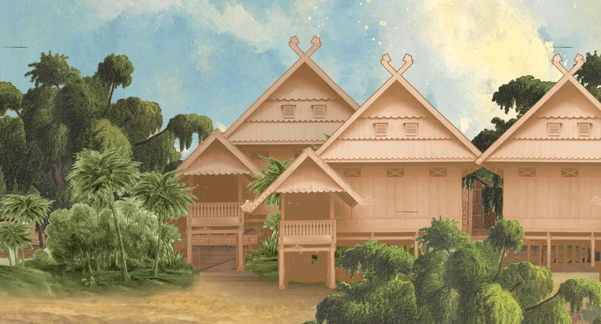
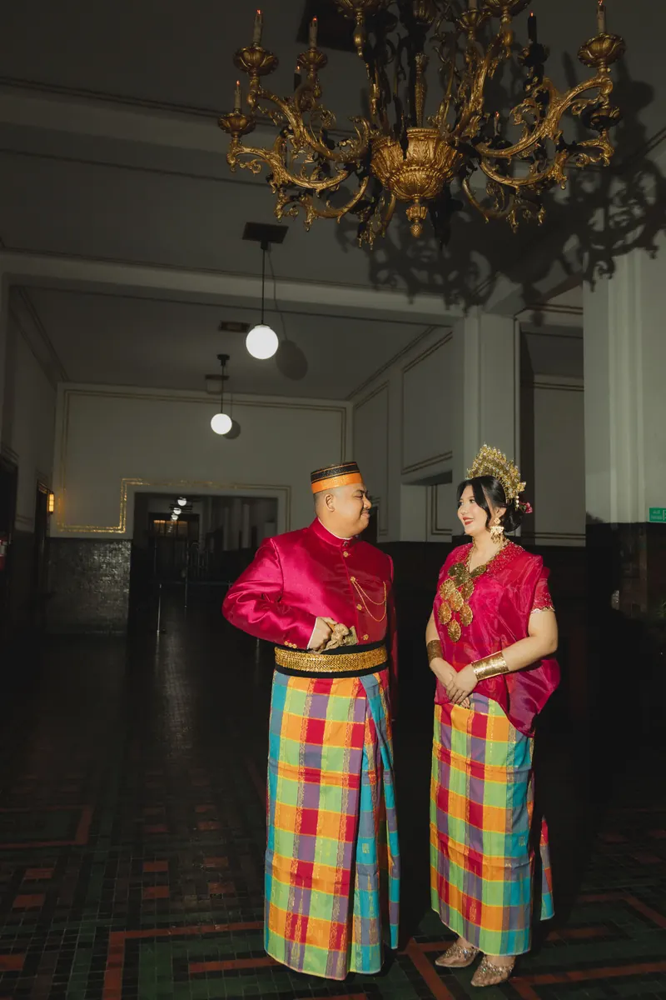
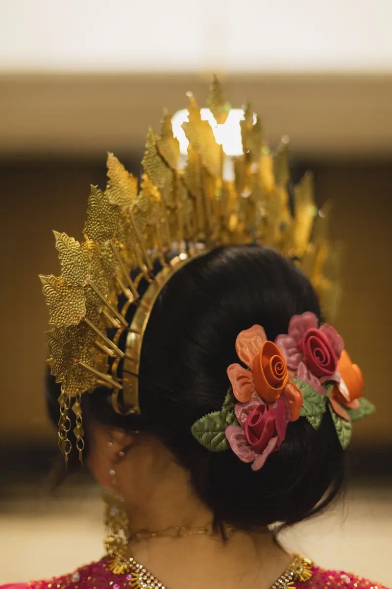
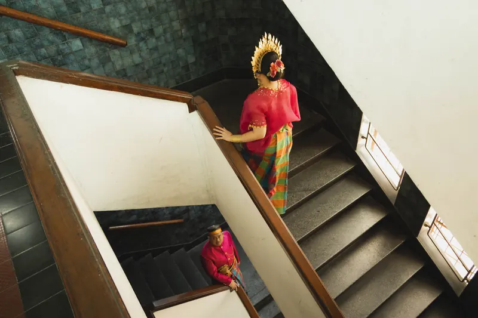

Room 01
Bugis-Makassar
Rafli's RootsThis series returns to Rafli's Bugis-Makassar roots. The attire, textiles, and gestures carry a heritage passed through family, presented here not as something distant, but as a living part of who he is today.
Photographed by @fikriipra


